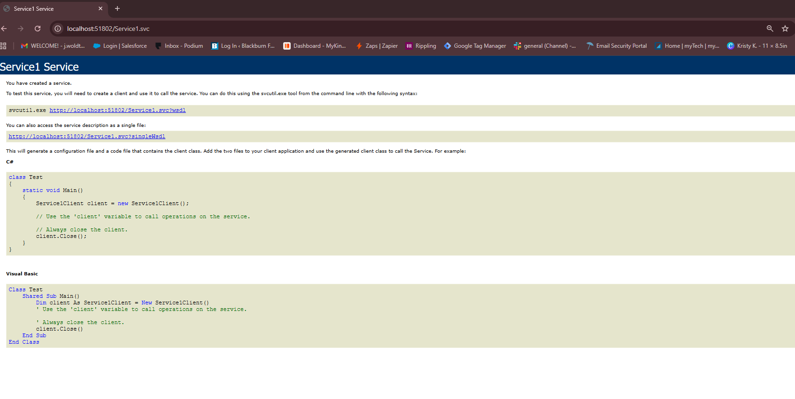

CIS266 Web Service Projects
Dynamic Unit2_Ex3
RESTful AJAX-JSON-PHP-MySQL DB Web Service documentation.
Working Demo:
Dynamic Scrum 3 Team Project
Unique CRUD JSON-PHP-MySQL RESTful Web Service documentation.
Working Demo:
Unit 3 - WCF Web Service Project
This project demonstrates the creation and deployment of a Windows Communication Foundation (WCF) service using C#. The service exposes endpoints that can be consumed by client applications and provides structured communication between systems.
Technologies Used:
- C#
- WCF (Windows Communication Foundation)
- SOAP / XML
- Service Contracts
Key Features:
- Service endpoint configuration using .svc file
- WSDL generation for client consumption
- Structured service communication using SOAP
- Client interaction through generated service proxy
Screen Capture:

Sample Code:
This code defines a service contract used to expose operations that can be accessed by client applications. The WCF framework generates the service description (WSDL) based on this contract.
Scrum 4 Team Project - Real-Time Voting Application
This project is a real-time voting application developed using Socket.IO to demonstrate live communication between connected users. The application allows multiple users to vote on a question and see results update instantly without refreshing the page.
Technologies Used:
- Node.js
- Socket.IO
- JavaScript
- HTML / CSS
Key Features:
- Real-time vote updates across multiple users
- Live client-server communication using WebSockets
- Dynamic UI updates without page refresh
- Event-driven architecture using Socket.IO
Working Demo:
This application runs locally using Node.js. To test the application, the server must be started and accessed through a browser at localhost.
Presentation & Demo:
View Scrum 4 Presentation Slides and Demo Video
Sample Code:
This code demonstrates client-side Socket.IO communication where user votes are sent to the server and updated results are broadcast back to all connected clients in real time.